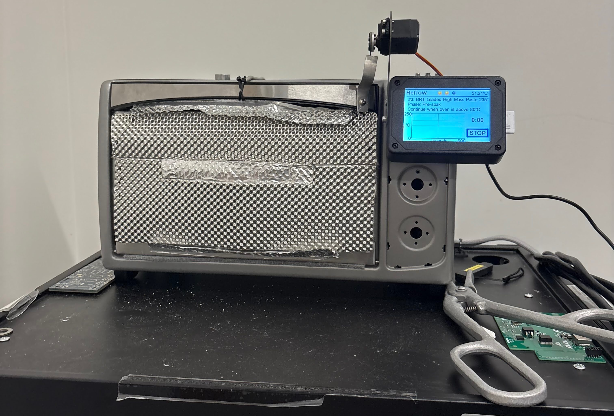

2025-12-22
Experimenting with an ESP8266

I connected an Arduino-compatible ESP8266 to my Mac, flashed a quick sketch to join my WiFi, and set up a simple terminal listener using netcat. Once the device posted a message, the terminal echoed it back, which was a clean end-to-end check that the network connection and client-server flow were working.
Here is the basic terminal command I used on my Mac (replace the port if needed):
nc -l 8080
And here is a minimal ESP8266 sketch that connects to WiFi and sends a message to the listener (replace WiFi creds and the Mac's IP address):
#include <ESP8266WiFi.h>
const char* ssid = \"YOUR_WIFI_SSID\";
const char* password = \"YOUR_WIFI_PASSWORD\";
const char* host = \"192.168.1.10\";
const uint16_t port = 8080;
void setup() {
Serial.begin(115200);
WiFi.begin(ssid, password);
while (WiFi.status() != WL_CONNECTED) {
delay(250);
Serial.print('.');
}
WiFiClient client;
if (client.connect(host, port)) {
client.println(\"hello from esp8266\");
client.stop();
}
}
void loop() {}
2025-12-28
Assembling Circuit Boards with Space Cookies!

As a part of the Space Cookies, we are always working towards progress for all aspects of the game. Currently, I have been part of the team that is working on a completely new concept: making a game controller specifically designed for Team 1868. One of our mentors from John Deere designed a circuit board to act as the base for the controller. I was given the opportunity to assemble these boards, learning about the different resistors, capacitors, and pieces we soldered on the board, using soldering paste.
Being someone who wants to try challenging tasks, I asked to place the USB-C receptacle and smaller pieces on the board, a step that required precision and slow, careful placement. Over the course of placing the pieces on the four boards, I improved and the process became easier and super fun.
Then, we baked the boards in a convection oven (it was so cool!) that was reconstructed to accommodate for hardening solder paste, with increased insulation, a touch-screen settings device to heat the board based on differing soldering paste. After this, we packed them up and will continue working with them in a couple weeks!